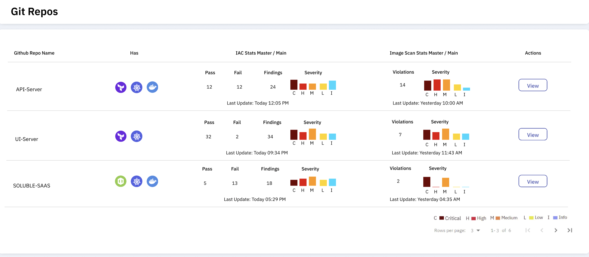

Repositories
The Soluble Repositories view provides a clear, real-time view of the security posture of a repository. It's a single pane of glass to view results of all the static code analysis, image scanning and secrets scanning.
Using the Soluble CLI inventory scanner, you get a list of what kinds of files the repository contains and their corresponding assessment results.

The repository view also provides an easy way to view assessment reports for all the recent git branches, and it also allows you to view a diff between two commits of a repo. This allows you to make decisions based on the security posture of a repository.